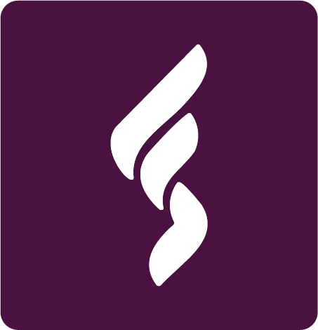

Logo, Color & Type
The foundation layer every other surface is built from. Logo files are live in /assets/logo/ — nine variants covering every context already visible in the FaithStream product (top nav, nav drawer, footer, light-mode panels), plus the dark and light cases the original one-page guide didn't cover.
Logo System
Live assets — /assets/logo/Nine files, one naming pattern: faithstream_<variant>_<color>.png. Three variants (full lockup, icon only, wordmark only) × three colors (purple, white, black) — plus one square favicon. Full reference list at the bottom of this section.
Full lockup — three contexts
Dark background, surface background, light background — the three contexts the logo already appears in across the live product (top nav, nav drawer, browse panel). Purple reads on both dark and surface; switch to the white variant only when the purple's own contrast against a busy photo or video background drops, switch to black only on light-mode panels.
Logo on every brand background
A full grid of all eight canonical backgrounds the logo may appear on — each labeled with the background name and the correct file to use. This removes all guesswork for thumbnail artists, social designers, and partner teams placing the logo on any brand surface.
Size scale
The logo across all contexts — from a 200px marketing banner down to 16px favicon. At 48px and below the full lockup becomes illegible; use the icon-only variant instead. Each row shows the logo rendered at that actual size.

faithstream_favicon.png — do not scale the full lockup to this sizeMinimum size rule
The full lockup must never appear narrower than 48px. Below that threshold the wordmark becomes unreadable even at retina resolution. Always switch to the icon-only file at compact sizes.
This is the smallest the full lockup may appear in any medium. At this size the wordmark is still legible on retina displays. Anything smaller must use faithstream_icon_purple.png instead.
Co-brand lockup
When FaithStream appears alongside a partner brand, use the wordmark-only file and separate the two lockups with a 1px vertical rule. Neither brand should dominate — equal optical weight, equal vertical alignment. Minimum clear space between the separator and each logo is 24px.
2. The separator line height should match the cap-height of the taller of the two logos.
3. On dark backgrounds use
faithstream_wordmark_white.png; on light use faithstream_wordmark_purple.png.4. FaithStream may appear on either side of the separator — left or right is equally valid.
5. Never place partner branding above the FaithStream mark in vertical stacks.
Icon only
faithstream_icon_purple.png includes the full circular badge background, but faithstream_icon_white.png and faithstream_icon_black.png are the bare flame mark with no circle — visible above, the white and black icons look noticeably smaller and "float" without the badge the purple one has. This looks like an inconsistency in how the white/black variants were exported, not a deliberate design choice. Recommend re-exporting white and black icon versions with the same circular badge treatment as the purple one, so all three are interchangeable.Wordmark only
For tight horizontal spaces or partnership lockups where the full circular icon doesn't fit. Note there's no black wordmark variant currently in the asset set — only purple and white — so on light backgrounds the purple wordmark itself is the light-mode option, not a separate black file.
Clear space
Defined as a unit relative to the icon's own height — labeled x below — so it scales correctly whether the logo appears at app-icon size or on a banner. Minimum clear space on all sides is 0.5x.
Things to avoid
A documented misuse gallery — not just rules in prose — removes guesswork for anyone touching a thumbnail, banner, or partner co-brand. This is the single highest-impact addition to the current logo guide. Each example below uses the real icon file with the violation applied, not a redrawn placeholder.
Additional violations — for completeness and for any vendor, partner, or contractor working with the assets:
Full file reference
| Filename | Contains | Use for |
|---|---|---|
faithstream_full_purple.png | Icon + wordmark, full color | Top nav, footer, primary marketing — default choice on dark + surface |
faithstream_full_white.png | Icon + wordmark, white | Plum/magenta/lavender backgrounds, dark hero overlays, video end-cards |
faithstream_full_black.png | Icon + wordmark, black | Cream/white backgrounds, light-mode marketing pages, print |
faithstream_icon_purple.png | Circular badge + flame mark, full color | App icon, nav drawer, compact UI badges at ≥28px |
faithstream_icon_white.png | Flame mark only, white (no badge — see flag) | Dark/photo backgrounds; pending badge fix |
faithstream_icon_black.png | Flame mark only, black (no badge — see flag) | Light backgrounds; pending badge fix |
faithstream_wordmark_purple.png | Text only, full color | Partnership lockups, tight horizontal spaces, light-mode |
faithstream_wordmark_white.png | Text only, white | Same, on dark backgrounds |
faithstream_favicon.png | Square icon, pre-sized | Browser tab, PWA icon, social preview fallback |
Color System
Reconciled with live product CSS variablesThe values below are not new colors invented for this document — they're the exact tokens already running in the FaithStream product (--plum, --magenta, --magenta2, --lavender), with the gap this system fills: a defined range of tints and shades so there's a full palette to design with, not just four points.
Core tokens (already shipped — unchanged)
| Token | Swatch | Hex | Used for in current code |
|---|---|---|---|
--bg / --plum-black | #0A0A0F | App background, page base | |
--surface | #111118 | Nav drawer, panels | |
--surface2 | #18181F | Card backgrounds | |
--plum | #491440 | Logo icon bg, "Give" button, primary brand color | |
--magenta | #9B2F87 | Active states, play buttons, progress bars, rating badges | |
--magenta2 | #702263 | Avatar gradient start | |
--lavender | #6C59A6 | Avatar gradient end | |
--cream | #F0EEF8 | Primary text on dark |
New tints & shades — fills the accent gap
This was the specific, repeated gap flagged across this whole project: no defined accent system, no usage rule, nothing to stop an accent color drifting outside the brand. Every addition below is a tint or shade of the existing four core tokens — nothing borrowed from outside the family.
| Token | Swatch | Hex | Role |
|---|---|---|---|
--lavender-light | #9C8FC4 | Secondary accent — links, genre tags, lighter UI text | |
--lavender-pale | #DCD6EC | Subtle fills, borders on light surfaces | |
--plum-tint | #6E3D63 | Mid-tone for gradients, hover states on plum | |
--magenta-dim | rgba(155,47,135,.45) | Glows, shadows, scrollbar thumbs (already used in product code) |
Usage rule
Functional color — open question
One real exception already exists in the live code: #4ade80 (green) is used for the "Match %" indicator on hover previews and modals — a Netflix-convention color that arrived without a deliberate brand decision behind it.
| Option | What it means |
|---|---|
| A — Retire it | Replace with a purple-family equivalent (e.g. --lavender-light for match %, a warm-shifted magenta for errors). Fully purple-only system, no exceptions. |
| B — Keep as the one exception | Green stays specifically for "Match %" since it's a near-universal streaming-platform convention users already read instantly; everything else (errors, alerts) still resolves to purple-family colors. |
Typography System
Inter + Syne already shipped — formalizing the system around themThe live product already uses Syne for display moments and Inter for everything else — confirming the direction tested earlier in this project. This section formalizes the rule set, shows the system in real creative context, and flags one inconsistency to resolve.
.topnav-logo, .modal-title, .card-port-num..hero-title at weight 800 — the workhorse for anything that needs to feel urgent and legible at small sizes..hero-tagline, "Stepping into Maggie's Shoes") uses Cinzel, a serif face that appears nowhere else in the system — likely added for one moment of flourish rather than as a deliberate third typeface. Recommend retiring it: either drop the tagline treatment or restyle it in Syne at a lighter weight, so the type system stays to two families everywhere, the same discipline already applied to color.Typeface pairing showcase
The visual relationship between Syne and Inter — the two families working in concert. Syne commands attention; Inter carries the message. The difference in texture between them creates natural hierarchy without relying solely on size.
for Africa and the World
Type hierarchy — all five levels at a glance
The complete scale stack from Display XL down to Caption. Use this as a quick visual reference — if text you're designing doesn't fit cleanly into one of these five rows, it likely needs to be reconsidered.
Type scale
The sizes already in use across the live product, organized into a single reference scale so new screens pull from here instead of picking arbitrary values.
Typography in context
The type system doesn't live in isolation — these mockups show how Syne and Inter work together in the actual contexts they inhabit: social flyers, hero banners, card overlays, and app notifications.
The Series